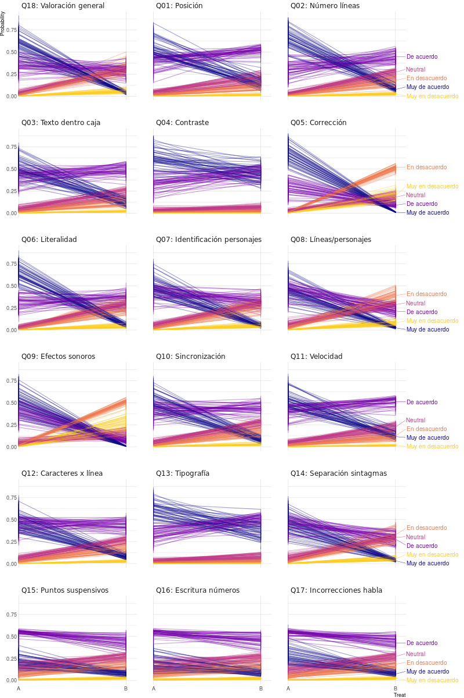

tree.1 <- ctree(Response ~ Treat + Cluster + Period + Seq, data = df_clean)8 Modelado estadístico.
Vamos a construir diversos modelos para analizar la asociación de la variable respuesta sobre los dos niveles de subtitulado y la interacción con el periodo y la secuencia de tratamientos.
8.1 Árboles de inferencia condicional.
Los arboles de inferencia condicional (CIT) son un tipo de árbol de decisión en el que la selección de variables y de los puntos de división no se basan en medidas de homogeneidad como el índice de Gini, sino en un contrastes de hipótesis no paramétricos. El algoritmo que se utiliza es el siguiente, ver Levshina (2020):
El algoritmo consiste en contrastar la hipótesis nula de si la variable de respuesta \(Y\) es independiente de alguna variable explicativa \(Y \mid X\). Para probar la hipótesis, se utiliza un algoritmo de permutación de la variable respuesta y se mide la asociación con la variable explicativa antes y después de la permutación. Si la asociación no varía significativamente, podemos asumir que las variables de respuesta y explicativa son independientes. De esta forma se selecciona la variable explicativa que más influye en la respuesta y que se utilizará en el particionado. Para elegir el valor de la variable explicativa que dividirá el conjunto de datos, se procede de forma análoga midiendo el cambio en la diferencia de asociación. De acuerdo con Friendly (2015), los CIT resuelven los problemas de sobreajuste de los árboles de decisión tradicionales.
Para realizar el particionado basado en CIT, vamos a usar la función ctree del paquete party de R. Presentamos aquí únicamente el modelo final elegido que incluye como variables explicativas Treat, Period, Seq y Cluster 1.
En la Figura 8.1 podemos ver que el nivel de subtitulado es el efecto principal, seguido del grupo de preguntas y finalmente la secuencia. En este modelo el periodo no aparece por no estar asociado con la respuesta. Estos resultados son contradictorios con los que obtuvimos en el análisis con el OR (ver Sección 7.2.3) en el que el factor secuencia no era significativo pero sí lo era el factor periodo. Por otro lado, vemos que la asociación más fuerte es el nivel de respuesta 5 para subtitulado \(A\), grupos de preguntas 1 y 2 y secuencia \(AB\) y de las respuestas 4 y 5 cuando la secuencia es \(BA\). El tratamiento \(B\) está fuertemente asociado con el nivel de respuesta 1 para el grupo de preguntas 1. Por último, con este modelo no hay ninguna combinación de factores que prediga un nivel de respuesta 1.

Aunque no es el objetivo del trabajo, podemos usar este modelo para hacer predicciones. La matriz de contingencia resultante es la siguiente:
Prediction
Reference 1 2 3 4 5
1 0 111 19 36 1
2 0 178 53 170 13
3 0 67 94 181 41
4 0 94 76 629 158
5 0 70 44 560 385Como habíamos anticipado, nunca se predice el nivel de respuesta 1. Las categorías que más probablemente predice nuestro modelo son la 4 y la 5 pero aún así hay mucha confusión entre ellas. La exactitud de predicción es 43%.
Un modelo alternativo sería usar las mismas variables explicativas pero cambiado Response por Level como variable de respuesta. Esta variable solo tiene tres niveles: positivo, negativo y neutro. De esta forma no se producen confusiones entre los niveles 1 y 2 por un lado y 4 y 5 por otro:
tree.2 <- ctree(Level ~ Treat + Cluster + Period + Seq, data = df_clean)
El árbol obtenido con variable respuesta Level (ver Figura 8.2) es muy similar al otro (ver Figura 8.1) con la principal diferencia de que ahora la secuencia ha desaparecido como factor relevante. Por otro lado, el modelo siempre predice una respuesta positiva excepto para el subtitulado \(B\) y grupo de preguntas 1, que es negativa (el nivel neutro nunca se predice). La exactitud del modelo ha subido a 72%. En cualquier caso no es una gran mejora ya que un modelo que predijera siempre la categoría mayoritaria (positiva), habría obtenido una exactitud de 68%. Se han hecho simulaciones consistentes en incluir como factor las preguntas o usar como modelo un árbol de decisión convencional con resultados similares.
8.2 Regresión ordinal.
El test de Likert es una escala ordinal. Los test estadísticos ANOVA o MANOVA presuponen que la variable de respuesta es cuantitativa y con distribución normal. Tratar las respuestas a un test de Likert como si fueran cuantitativas no es correcto por las siguientes razones:
Los niveles de respuesta no son necesariamente equidistantes: la distancia entre un par de opciones de respuesta puede no ser la misma para todos los pares de opciones de respuesta. Por ejemplo, la diferencia entre “Muy en desacuerdo” y “En desacuerdo” y la diferencia entre “De acuerdo” y “Muy de acuerdo” es de un nivel, pero psicológicamente puede ser percibida de forma diferente por cada sujeto.
La distribución de las respuestas ordinales puede ser no normal. En particular esto sucederá si hay muchas respuestas en los extremos del cuestionario.
Las varianzas de las variables no observadas que subyacen a las variables ordinales observadas pueden diferir entre grupos, tratamientos, periodos, etc.
En Liddell y Kruschke (2018) se han analizado los problemas potenciales de tratar datos ordinales como si fueran cuantitativos constatando que se pueden presentar las siguientes situaciones:
- Se pueden encontrar diferencias significativas entre grupos cuando no las hay: error tipo I.
- Se pueden obviar diferencias cuando en realidad sí existen: error tipo II.
- Incluso se pueden invertir los efectos de un tratamiento.
- También puede malinterpretarse la interacción entre factores.
La Regresión Logística Multinomial es una extensión de la Regresión Logística cuando la variable de respuesta es nominal. La Regresión Ordinal tiene en consideración que los valores nominales de la variable de respuesta están ordenados y por eso será el modelo que utilizaremos.
8.2.1 Variantes de la Regresión Ordinal.
Los modelos lineales generalizados (\(GLM\)) son modelos en los que la variable respuesta no es normal. Para especificar un \(GLM\) son necesarios tres componentes (ver O’Connell 2006):
- Un componente aleatorio: será una distribución de probabilidad de la familia exponencial que se asume que sigue la variable respuesta (en la regresión logística será la distribución Binomial o la distribución de Bernoulli).
- Un componente lineal de predictores.
- Una función de enlace que realiza transformación de los valores del componente lineal a los que puede tomar la variable respuesta. Por ejemplo en la función logística será la función \(logit^{-1}(x)\). Esta función permite pasar de un rango de valores \((-\infty, +\infty)\) a un rango \((0, 1)\).
La Regresión Ordinal es una extensión de la Regresión Logística y, por lo tanto de \(GLM\). Según Bürkner y Vuorre (2019) hay tres clases de Regresión Ordinal:
- Regresión ordinal acumulativa.
- Regresión ordinal secuencial.
- Regresión ordinal adyacente.
Nos centraremos en la primera ya que es la más habitual y adecuada para nuestro caso (ver Bürkner y Vuorre 2019, 23-24). El modelo acumulativo, CM, presupone que la variable ordinal observada, \(Y\), proviene de la categorización de una variable latente (no observada) continua, \(\tilde{Y}\). Hay \(K\) umbrales \(\tau_k\) que particionan \(\tilde{Y}\) en \(K + 1\) categorías ordenadas observables (ver Figura 8.3). Si asumimos que \(\tilde{Y}\) tiene una cierta distribución (por ejemplo, normal) con distribución acumulada \(F\), se puede calcular la probabilidad de que \(Y\) sea la categoría \(k\) de esta forma:
\[Pr(Y = k) = F(\tau_k) - F(\tau_{k-1})\]

Por ejemplo en la Figura 8.3,
\[Pr(Y = 2) = F(\tau_2) - F(\tau_{1})\]
Si suponemos que \(\tilde{Y}\) tiene una relación lineal los predictores:
\[\tilde{Y} = \eta + \epsilon = \beta_1 x_1 + \beta_2 x_2 + ... + \beta_p x_p + \epsilon\],
y que los errores son \(N(0,\sigma^2)\). Entonces la función de probabilidad acumulada de los errores tendrá la misma forma que la de \(\tilde{Y}\):
\[\mathrm{Pr}(\epsilon \leq z) = F(z)\]
Y podremos calcular la distribución de probabilidad acumulada de \(Y\):
\[\mathrm{Pr}(Y \leq k \mid \eta) = \mathrm{Pr}(\tilde{Y} \leq \tau_k \mid \eta) = \mathrm{Pr}(\eta + \epsilon \leq \tau_k) = \mathrm{Pr}(\epsilon \leq \tau_k - \eta) = F(\tau_k - \eta)\]
Por lo que asumiendo la normalidad de los errores:
\[\mathrm{Pr}(Y = k) = \Phi(\tau_k - \eta) - \Phi(\tau_{k - 1} - \eta)\]
Donde hay que estimar los umbrales y los coeficientes de regresión. La función anterior es la conocida como la función de enlace probit. Otra función de enlace popular es la función logit. Es la que usaremos en este trabajo por ser más fácil su interpretación 2. Con esta función de enlace la interpretación de los coeficientes es parecida a la de los coeficientes de la regresión logística. Se parte del supuesto de que el \(logit\) de la función de probabilidad es lineal:
\[logit [P(Y \le k)] = \tau_{k} - \eta = \tau_{k} - (\beta_1 x_1 + \beta_2 x_2 + ... + \beta_p x_p)\]
En ese caso, se puede demostrar fácilmente que, por ejemplo:
\[\frac{\frac{\mathrm{Pr}(Y \leq k \mid \eta)}{\mathrm{Pr}(Y > k \mid \eta)}}{\frac{\mathrm{Pr}(Y \leq k+1 \mid \eta)}{\mathrm{Pr}(Y > k+1 \mid \eta)}} = \exp(\tau_{k} - \tau_{k+1})\]
Y que 3:
\[\frac{\frac{\mathrm{Pr}(Y \leq k \mid x_i = 1)}{\mathrm{Pr}(Y > k \mid x_i = 1)}}{\frac{\mathrm{Pr}(Y \leq k \mid x_i=0)}{\mathrm{Pr}(Y > k \mid x_i = 0)}} = \exp(-\beta_{i})\]
o, equivalentemente:
\[\frac{\frac{\mathrm{Pr}(Y > k \mid x_i = x + 1)}{\mathrm{Pr}(Y \leq k \mid x_i = x + 1)}}{\frac{\mathrm{Pr}(Y > k \mid x_i = x)}{\mathrm{Pr}(Y \leq k \mid x_i = x)}} = \exp(\beta_{i})\]
Es decir, que \(\exp(\beta_{i})\) es el \(OR\) (cambio en \(odds\)) de que la variable respuesta esté por encima de una determinada categoría versus estar por debajo de ella para una unidad de incremento del predictor \(x_i\). Este modelo se denomina proporcional ya que cada predictor se asume que tiene los mismos efectos sobre todas las categorías de la variable de respuesta ordinal (ver Liu 2022). Un valor del coeficiente \(\beta_i\) positivo indica que la relación entre el predictor \(x_i\) y la función de \(logit\) es positiva y, por lo tanto, se incrementa la posibilidad de un mayor valor de la variable respuesta. Como veremos, esta suposición se puede relajar y permitir que los coeficientes de todos o de algunos de los predictores sean diferentes para cada pareja consecutiva de valores de respuesta. Tendríamos entonces más parámetros a estimar con una interpretación más compleja.
8.2.2 Ajuste del modelo ordinal Response ~ Treat.
Existen varios paquetes en R que permiten ajustar una regresión ordinal logística. El más popular es el paquete Ordinal (R. H. B. Christensen 2022). El paquete VGAM (Yee 2023) es más flexible y potente. Otra posibilidad es usar la función polr del paquete MASS (Venables y Ripley 2002). Finalmente la función orm del paquete rms también permite hacerlo (ver Harrell 2015). En este trabajo usaremos el paquete Ordinal por permitir también incluir efectos aleatorios que utilizaremos en un apartado posterior. Comenzamos con un modelo simple que tiene como único predictor el nivel de subtitulado por ser la variable objetivo de nuestro modelo:
\[ \text{logit}(P(Response_i \leq k)) = \tau_k - \beta_1 \text{Treat}_i, \]
clm_treat <-
clm(
Response ~ Treat,
data = df_clean, link = "logit"
)
summary(clm_treat)formula: Response ~ Treat
data: df_clean
link threshold nobs logLik AIC niter max.grad cond.H
logit flexible 2980 -3966.11 7942.21 5(0) 1.64e-10 3.1e+01
Coefficients:
Estimate Std. Error z value Pr(>|z|)
TreatB -1.7206 0.0731 -23.54 <2e-16 ***
---
Signif. codes: 0 '***' 0.001 '**' 0.01 '*' 0.05 '.' 0.1 ' ' 1
Threshold coefficients:
Estimate Std. Error z value
1|2 -3.97230 0.09678 -41.045
2|3 -2.45446 0.06812 -36.029
3|4 -1.66453 0.05936 -28.042
4|5 -0.10547 0.04946 -2.132El método summary() muestra la información resumen. Para su interpretación vamos a seguir Rune Haubo Bojesen Christensen (2018). El número de condición Hessiano es inferior a \(10^4\) lo que es indicativo de que no hay problemas de optimización 4. La sección de coeficientes es la más importante. Se muestra la estimación de parámetros, el error estándar y la significación estadística de acuerdo al test de Wald 5. Comprobamos que el valor es claramente significativo. Es decir, que los estudiantes han valorado de forma diferente la calidad del subtitulado en ambos vídeos. El estimador de maxima verosimilitud del coeficiente TreatB es -1.72. Siguiendo la deducción de Bruin (2011) podemos, por ejemplo, hacer la siguiente interpretación del significado de este coeficiente referido a dos niveles consecutivos de respuesta:
\[ \begin{aligned} logit [P(Y \le 1)] & = & -3.97 - (-1.72 x_1) \\ logit [P(Y \le 2)] & = & -2.45 - (-1.72 x_1) \end{aligned} \]
Por lo tanto los \(odds\) serían:
\[ \begin{aligned} \frac{P(Y \le 1 \mid x_1 = B)}{P(Y > 1 \mid x_1 = B)} & = & exp(-3.97)/exp(-1.72) \\ \frac{P(Y \le 1 \mid x_1 = A)}{P(Y > 1 \mid x_1 = A)} & = & exp(-3.97) \\ \frac{P(Y \le 2 \mid x_1 = B)}{P(Y > 2 \mid x_1 = B)} & = & exp(-2.45)/exp(-1.72) \\ \frac{P(Y \le 2 \mid x_1 = A)}{P(Y > 2 \mid x_1 = A)} & = & exp(-2.45) \end{aligned} \]
Y los \(OR\):
\[ \begin{aligned} \frac{P(Y \le 1 | x_1=B)}{P(Y > 1 | x_1=B)} / \frac{P(Y \le 1 | x_1=A)}{P(Y > 1 | x_1=A)} & = & 1/exp(-1.72) & = & 5.59 \\ \frac{P(Y \le 2 | x_1=B)}{P(Y > 2 | x_1=B)} / \frac{P(Y \le 2 | x_1=A)}{P(Y > 2 | x_1=A)} & = & 1/exp(-1.72) & = & 5.59 \\ \end{aligned} \]
Se comprueba que el \(OR\) es equivalente en todos los niveles de respuesta al cuestionario. Esta es una de las suposiciones de la regresión ordinal acumulativa. El \(odds\) de respuesta al cuestionario entre los niveles inferiores y superiores a uno dado, \(k\), es 5.59 veces en el subtitulado \(B\) que en el \(A\). Esto indica que el subtitulado \(B\) es percibido por los estudiantes como de peor calidad que el subtitulado \(A\). Concretamente, el coeficiente \(\beta\) para Treat es el log odds de observar una mejor respuesta en una pregunta del test es 5.59 veces superior en el nivel de subtitulado \(A\) que en el \(B\). Aunque no suele ser de interés la interpretación de los coeficientes de los umbrales (Threshold coefficients), se pueden utilizar para estimar las probabilidades de respuesta. Por ejemplo, para el nivel de subtitulado \(B\):
\[ \begin{aligned} logit [P(Y \le 1)] & = & -3.97 - (-1.72) & = & -2.25 \\ odds (P(Y \le 1)) & = & exp(logit [P(Y \le 1)]) & = & 0.11 \\ P(Y \le 1) & = & \frac{exp(-2.25)}{1 + exp(-2.25)} & = & 0.10 \\ P(Y \le 2) & = & \frac{exp(-0.73)}{1 + exp(-0.73)} & = & 0.32 \\ P(Y = 2) & = & P(Y \le 2) - P(Y \le 1) & = & 0.23 \end{aligned} \]
Para el subtitulado \(A\) no se tiene en cuenta el coeficiente \(TreatB\) ya que el valor \(x_1\) es cero:
\[ \begin{aligned} logit [P(Y \le 1)] & = & & & -3.97\\ odds (P(Y \le 1)) & = & exp(logit [P(Y \le 1)]) & = & 0.02 \\ P(Y \le 1) & = & \frac{exp(-3.97)}{1 + exp(-3.97)} & = & 0.02 \end{aligned} \]
En Tabla 8.1 se muestran las probabilidades para ambos niveles de subtitulado y todos los posibles valores de respuesta.
| 1 | 2 | 3 | 4 | 5 | |
|---|---|---|---|---|---|
| A | 0.018 | 0.061 | 0.08 | 0.315 | 0.526 |
| B | 0.095 | 0.229 | 0.19 | 0.320 | 0.166 |
8.2.3 Ajuste del modelo ordinal Response ~ Treat + Period.
Para saber si existe un efecto periodo, añadimos como predictor la variable Period.
\[ \text{logit}(P(Response_i \leq k)) = \tau_k - \beta_1 \text{Treat}_i - \beta_2 \text{Period}_i \]
clm_treat_period <-
clm(
Response ~ Treat + Period,
data = df_clean, link = "logit"
)
summary(clm_treat_period)formula: Response ~ Treat + Period
data: df_clean
link threshold nobs logLik AIC niter max.grad cond.H
logit flexible 2980 -3957.88 7927.76 5(0) 1.94e-10 4.1e+01
Coefficients:
Estimate Std. Error z value Pr(>|z|)
TreatB -1.74090 0.07339 -23.72 < 2e-16 ***
Period2 -0.27560 0.06805 -4.05 5.12e-05 ***
---
Signif. codes: 0 '***' 0.001 '**' 0.01 '*' 0.05 '.' 0.1 ' ' 1
Threshold coefficients:
Estimate Std. Error z value
1|2 -4.13085 0.10507 -39.314
2|3 -2.60905 0.07872 -33.143
3|4 -1.81652 0.07073 -25.681
4|5 -0.25187 0.06153 -4.093Vemos que ambos coeficientes son significativos y con signo negativo. Un signo negativo en el efecto periodo está asociado con que la valoración del subtitulado empeora en el segundo periodo independientemente de si se trata del subtitulado correcto o incorrecto. Aplicando el mismo razonamiento del apartado anterior, el \(OR\) del efecto periodo es \(1/exp(-0.28) = 1.32\). Lo que quiere decir que una vez controlado el efecto principal del tratamiento, el subtitulado en el segundo periodo es valorado como de inferior calidad que en el primero. Esto estaría indicando que los estudiantes son más exigentes con el subtitulado en la segunda actividad independientemente de su calidad real.
8.2.4 Ajuste del modelo ordinal Response ~ Treat * Period.
Añadimos al modelo la interacción entre subtitulado y periodo. Esta interacción corresponde al efecto secuencia. Se puede demostrar que los modelos Response ~ Treat*Period y Response ~ Treat + Period + Seq son equivalentes si se cambia el contraste por defecto utilizado en R, que es treatment, a sum 6.
options(contrasts = rep("contr.sum", 2))
clm_treat_period_seq.sum <-
clm(
Response ~ Treat + Period + Seq,
data = df_clean, link = "logit"
)
coef(clm_treat_period_seq.sum) 1|2 2|3 3|4 4|5 Treat1 Period1 Seq1
-3.1266457 -1.6083838 -0.8184857 0.7499332 0.8739547 0.1396182 0.1062749 options(contrasts = rep("contr.sum", 2))
clm_treat.period.sum <-
clm(
Response ~ Treat * Period,
data = df_clean, link = "logit"
)
coef(clm_treat.period.sum) 1|2 2|3 3|4 4|5 Treat1
-3.1266457 -1.6083838 -0.8184857 0.7499332 0.8739547
Period1 Treat1:Period1
0.1396182 0.1062749 Vemos que los coeficientes Seq1 y Treat1:Period1 son iguales y, por lo tanto, queda demostrado que la secuencia es la interacción entre periodo y tratamiento. Sin embargo los coeficientes son diferentes si el contraste es treatment 7:
options(contrasts = rep("contr.treatment", 2))
clm_treat_period_seq <-
clm(
Response ~ Treat + Period + Seq,
data = df_clean, link = "logit"
)
coef(clm_treat_period_seq) 1|2 2|3 3|4 4|5 TreatB Period2 SeqBA
-4.2464935 -2.7282315 -1.9383335 -0.3699146 -1.7479094 -0.2792363 -0.2125498 options(contrasts = rep("contr.treatment", 2))
clm_treat.period <-
clm(
Response ~ Treat * Period,
data = df_clean, link = "logit"
)
coef(clm_treat.period) 1|2 2|3 3|4 4|5 TreatB
-4.2464935 -2.7282315 -1.9383335 -0.3699146 -1.9604592
Period2 TreatB:Period2
-0.4917861 0.4250996 En el Apéndice C se explica como se pueden obtener los coeficientes de un modelo a partir de los coeficientes de otro modelo. Es decir, que se pueden obtener los coeficientes del modelo clm_treat.period a partir de los coeficientes del modelo clm_treat.period.sum. Por ejemplo, el coeficiente \(TreatB\) del modelo clm_treat.period se calcula:
(-2 * (coef(clm_treat.period.sum)["Treat1"] + coef(clm_treat.period.sum)["Treat1:Period1"])) Treat1
-1.960459 coef(clm_treat.period)["TreatB"] TreatB
-1.960459 Sin embargo la interpretación de los coeficientes del segundo modelo, clm_treat.period, es más sencilla ya que es la que estamos habituados a utilizar en R. Por ello en este análisis se utilizará el modelo clm_treat.period. El resumen del ajuste es:
summary(clm_treat.period)formula: Response ~ Treat * Period
data: df_clean
link threshold nobs logLik AIC niter max.grad cond.H
logit flexible 2980 -3953.01 7920.03 5(0) 2.14e-10 8.1e+01
Coefficients:
Estimate Std. Error z value Pr(>|z|)
TreatB -1.96046 0.10229 -19.166 < 2e-16 ***
Period2 -0.49179 0.09744 -5.047 4.49e-07 ***
TreatB:Period2 0.42510 0.13638 3.117 0.00183 **
---
Signif. codes: 0 '***' 0.001 '**' 0.01 '*' 0.05 '.' 0.1 ' ' 1
Threshold coefficients:
Estimate Std. Error z value
1|2 -4.24649 0.11182 -37.977
2|3 -2.72823 0.08821 -30.928
3|4 -1.93833 0.08167 -23.732
4|5 -0.36991 0.07308 -5.062Vemos que los tres coeficientes son significativos. El principal efecto es el nivel de subtitulado obteniendo mejores puntuaciones el nivel \(A\); el efecto periodo es negativo por lo que el primer periodo obtiene mejores puntuaciones; por último, el efecto secuencia es positivo pero de menor valor absoluto que el efecto periodo. Esto quiere decir que el subtitulado de nivel \(B\) en el periodo 2 (secuencia \(AB\)), tiene un efecto periodo inferior que el subtitulado \(A\) en el mismo periodo. Matemáticamente:
\[ \begin{aligned} logit [P(Y \le 1 \mid Treat = A, Period = 1)] & = & -4.25 \\ logit [P(Y \le 1 \mid Treat = B, Period = 1)] & = & -4.25 - (-1.96) \\ logit [P(Y \le 1 \mid Treat = A, Period = 2)] & = & -4.25 - (-0.49) \\ logit [P(Y \le 1 \mid Treat = B, Period = 2)] & = & -4.25 -(-1.96 -0.49 + 0.43) \end{aligned} \]
En definitiva, en el nivel de subtitulado \(B\) apenas encontramos diferencias entre periodos, sin embargo, en el nivel de subtitulado \(A\) existe un efecto periodo cuyo valor en logits es -0.49. Es decir, que la valoración del subtitulado de nivel \(A\) es inferior en el segundo periodo que en el primero. En la Figura 8.4 podemos ver las predicciones del modelo.

8.2.5 Elección del modelo ordinal mediante el test de razón de verosimilitud.
Al ser los tres modelos anidados, podemos compararlos con la prueba de razón de verosimilitud. Comprobamos que el tercer modelo (el que incorpora la interacción entre los subtítulos y el periodo) reduce significativamente el logaritmo de la función de verosimilitud y, por lo tanto, debe ser aceptado:
anova(clm_treat, clm_treat_period, clm_treat.period)Likelihood ratio tests of cumulative link models:
formula: link: threshold:
clm_treat Response ~ Treat logit flexible
clm_treat_period Response ~ Treat + Period logit flexible
clm_treat.period Response ~ Treat * Period logit flexible
no.par AIC logLik LR.stat df Pr(>Chisq)
clm_treat 5 7942.2 -3966.1
clm_treat_period 6 7927.8 -3957.9 16.448 1 5e-05 ***
clm_treat.period 7 7920.0 -3953.0 9.738 1 0.001805 **
---
Signif. codes: 0 '***' 0.001 '**' 0.01 '*' 0.05 '.' 0.1 ' ' 18.2.6 Comprobación de las hipótesis del modelo.
La principal hipótesis de un modelo de regresión logística ordinal proporcional acumulativa es que los coeficientes son iguales entre cualesquiera dos niveles de respuestas correlativos. Se han propuesto diversas fórmulas para comprobar esta hipótesis. El paquete Ordinal dispone de la función nominal_test() que lo que hace es realizar un test de razón de verosimilitud para cada predictor ajustando un modelo en el que se ha relajado la condición de proporcionalidad. Se constata que el test resulta significativo para Treat y para Treat:Period, por lo que para estas dos variables no se puede asumir que los coeficientes estimados se mantengan constantes en todos los niveles de respuesta.
nominal_test(clm_treat.period)Tests of nominal effects
formula: Response ~ Treat * Period
Df logLik AIC LRT Pr(>Chi)
<none> -3953.0 7920.0
Treat 3 -3904.4 7828.9 97.172 <2e-16 ***
Period 3 -3951.4 7922.7 3.307 0.3467
Treat:Period 9 -3884.8 7801.6 136.408 <2e-16 ***
---
Signif. codes: 0 '***' 0.001 '**' 0.01 '*' 0.05 '.' 0.1 ' ' 1Lo que procede es ajustar el modelo relajando la constante de proporcionalidad de esas variables. Se ha realizado esto utilizando la función vglm del paquete VGAM. Vemos que ahora hay cuatro coeficientes para cada una de las variables Treat y Treat:Period 8.
vglm_treat.period <- vglm(
Response ~ Treat * Period,
VGAM::cumulative(link = "logit", parallel = F ~ Treat + Treat:Period, reverse = T),
data = df_clean
)
coef(vglm_treat.period) %>% data.frame() .
(Intercept):1 6.2295614
(Intercept):2 3.5001281
(Intercept):3 2.2121438
(Intercept):4 0.2998788
TreatB:1 -4.0441016
TreatB:2 -2.8029889
TreatB:3 -2.2174630
TreatB:4 -1.7926200
Period2 -0.5345919
TreatB:Period2:1 0.3509228
TreatB:Period2:2 0.3607009
TreatB:Period2:3 0.3891474
TreatB:Period2:4 0.8024952En la Figura 8.5 se muestran las probabilidades de respuesta de este modelo.

8.2.7 Introducción a los modelos multinivel.
Un modelo multinivel, jerárquico o mixto es un modelo en el que tenemos datos de un nivel inferior anidados en estructuras de un nivel superior. Por ejemplo, si quisiéramos evaluar el rendimiento de varios métodos de enseñanza, poríamos seleccionar aleatoriamente varios colegios participantes y en cada uno de ellos elegir varias clases en las que se impartiría uno de los métodos de enseñanza. Los modelos multinivel se utilizan cuando se incumple la hipótesis de independencia de entre las observaciones. En el caso de los métodos de enseñanza, los alumnos de una clase no son independientes de los alumnos de otra clase del mismo colegio y también es esperable que los alumnos de un mismo colegio sean más parecidos entre sí que los de otro colegio. Otra situación en la que se viola la condición de independencia entre observaciones es cuando se toman varias medidas del mismo sujeto. Este tipo de experimentos se llaman de medidas repetidas o longitudinales. En este caso se considera que las medidas están anidadas en el sujeto (ver Liu 2022). En un modelo multinivel no es necesario que todas las variables tengan una estructura jerárquica. Distinguimos entonces dos tipos de variables. Las conocidas como de efectos fijos son aquellas variables que se consideran que tienen el mismo efecto en toda la población y, por lo tanto, estimamos un único coeficiente. Las que llamamos como variables de efectos aleatorios tienen un coeficiente diferente para cada elemento de la población y se supone que son una muestra de una población mucho mayor, como el caso de seleccionar aleatoriamente una muestra de colegios. Normalmente el coeficiente particular de cada elemento no es de interés para el investigador y se asuma que tienen una media centrada en cero. El mayor interés de los efectos aleatorios es la estimación de su matriz de varianzas-covarianzas.
La ecuación general de un modelo multinivel con dos niveles y un solo predictor con efectos aleatorios es (ver Chen y Chen 2021, 40):
\[ \begin{aligned} Level\ 1: & y_{ij} & = & \beta_{0j} + \beta_{1j}x_{1ij} + \epsilon_{ij} \\ Level\ 2: & \beta_{0j} & = & \beta_{0} + U_{0j} & (intercepto\ aleatorio) \\ & \beta_{1j} & = & \beta_{0} + U_{1j} & (pendiente\ aleatoria) \\ \end{aligned} \]
Donde los errores del modelo se distribuyen,
\[ Error\ intra\ grupo: \epsilon_{ij} \sim N(0, \sigma^2) \]
\[ Error\ entre\ grupos: \begin{pmatrix} U_{0j} \\ U_{1j} \\ \end{pmatrix} \sim N \begin{pmatrix} \begin{pmatrix} 0 \\ 0 \\ \end{pmatrix}, \begin{pmatrix} \tau_0^2 & \tau_0\tau_1\rho_{01} \\ \tau_0\tau_1\rho_{01} & \tau_1^2 \\ \end{pmatrix} \end{pmatrix} \]
donde \(j\) son los grupos que varían \(j = 1,...,J\) (\(J\) es el número de grupos); \(i\) es la observación \(i\) del grupo \(j\) (\(i = 1,...,n_j\), \(n_j\) es el número de observaciones del grupo \(j\)). El modelo se compone de una parte fija \(\beta_0 + \beta_1 x_{ij}\) y una aleatoria \(U_{0j} + U_{1j} x_{1ij} + \epsilon{ij}\). Los parámetros de este modelo son el intercepto y la pendiente de efectos fijos (\(\beta_0\) y \(\beta_1\)), la varianza intra-grupos (\(\sigma^2\)), la varianza inter-grupos del intercepto aleatoria (\(\tau_0\)) y de la pendiente aleatoria (\(\tau_1\)), y la correlación entre intercepto y pendiente aleatorias (\(\rho_{01}\)). Cuando se introduce una estructura multinivel se pueden omitir tanto el intercepto como la pendiente aleatoria.
En Gelman et al. (2013) se evalúan tres posibilidades a la hora de definir un modelo:
- \(Complete\ pooloing\): Consiste en estimar un único parámetro para cada predictor. Es equivalente a un modelo con efectos fijos.
- \(No\ pooling\): Se estiman tantos paŕametros como grupos haya de forma independiente.
- \(Partial\ pooling\): Es el modelo jerárquico. Es una mezcla de ambos, ya que aunque se estima un parámetro para cada grupo, esta estimación no es independiente, sino que se supone que las observaciones de un mismo grupo proceden de una misma distribución de probabilidad. Esto se traduce en que se produce una contracción (\(shrinkage\)) en la estimación de los parámetros. Al influir la estimación de unas observaciones en otras, la estimación es de menor valor absoluto que la que resultaría en un modelo de \(no\ pooling\). De esta forma podemos ver el \(complete\ pooling\) y el \(no\ pooling\) como dos casos particulares y extremos del \(no\ pooling\). La contracción de coeficientes en los modelos multinivel actúa como una regularización que puede evitar el sobreajuste.
Los modelos multinivel requieren supuestos adicionales en el nivel segundo y superiores que son similares a los supuestos para los modelos de efectos fijos en el primer y único nivel (ver Chen y Chen 2021, 43). Para estimar los parámetros en un modelo multinivel se suele utilizar el método de máxima verosimilitud restringida (RMLE), que es una variante de la estimación por máxima verosimilitud (MLE) en la que se hacen ajustes en los grados de libertad del modelo con efectos aleatorios.
8.2.8 Ajuste del modelo multinivel ordinal.
El modelo multinivel aleatorio más simple que podemos considerar es el que incorpora únicamente un interceptor aleatorio para los estudiantes del curso. Que los estudiantes sean considerados un efecto aleatorio está doblemente justificado. Por un lado, son una muestra de una población más amplia que estaría constituida por todos los estudiantes de todos los cursos de accesibilidad. Por otro, cada estudiante realiza el test de evaluación dos veces y, por lo tanto, las respuestas a estos cuestionarios no son independientes. La especificación del modelo será la siguiente:
\[ \text{logit}(P(Response_{ij} \leq k)) = \tau_k +\tau_{kj} - \beta_1 \text{Treat}_{ij}, \]
donde \(Response_{ij}\) es la observación \(i\) del usuario \(j\), \(\tau_k\) es el interceptor común a todos los usuarios para el nivel de respuesta \(k\) y \(\tau_{kj}\) es el interceptor específico para el usuario \(j\). Para ajustar el modelo, vamos a utilizar la función clmm() del paquete Ordinal ya que permite la inclusión de efectos aleatorios.
clmm_subject <- clmm(Response ~ (1 | Subject), data = df_clean)
summary(clmm_subject)Cumulative Link Mixed Model fitted with the Laplace approximation
formula: Response ~ (1 | Subject)
data: df_clean
link threshold nobs logLik AIC niter max.grad cond.H
logit flexible 2980 -4053.61 8117.23 272(1093) 7.11e-04 8.3e+01
Random effects:
Groups Name Variance Std.Dev.
Subject (Intercept) 0.8385 0.9157
Number of groups: Subject 87
No Coefficients
Threshold coefficients:
Estimate Std. Error z value
1|2 -3.1597 0.1291 -24.481
2|3 -1.6869 0.1109 -15.212
3|4 -0.9383 0.1077 -8.713
4|5 0.6354 0.1068 5.951Vemos que el parámetro \(\widehat{\tau_0}\) tiene un valor 0.92 y que no hay coeficientes que estimar. El siguiente modelo en orden de complejidad es el que incorpora el predictor Treat:
clmm_treat_subject <- clmm(Response ~ Treat + (1 | Subject), data = df_clean)
summary(clmm_treat_subject)Cumulative Link Mixed Model fitted with the Laplace approximation
formula: Response ~ Treat + (1 | Subject)
data: df_clean
link threshold nobs logLik AIC niter max.grad cond.H
logit flexible 2980 -3665.73 7343.47 395(1585) 4.97e-04 9.5e+01
Random effects:
Groups Name Variance Std.Dev.
Subject (Intercept) 1.265 1.125
Number of groups: Subject 87
Coefficients:
Estimate Std. Error z value Pr(>|z|)
TreatB -2.0747 0.0793 -26.16 <2e-16 ***
---
Signif. codes: 0 '***' 0.001 '**' 0.01 '*' 0.05 '.' 0.1 ' ' 1
Threshold coefficients:
Estimate Std. Error z value
1|2 -4.7243 0.1638 -28.839
2|3 -3.0518 0.1453 -21.008
3|4 -2.1256 0.1392 -15.269
4|5 -0.2068 0.1325 -1.561En este modelo \(\widehat{\tau_0}\) vale 1.12 y la pendiente del tratamiento, TreatB es -2.07. Podemos considerar un modelo en la que la valoración de cada sujeto sea diferente para cada tratamiento:
clmm_treat.subject <- clmm(Response ~ Treat + (1 + Treat | Subject), data = df_clean)
summary(clmm_treat.subject)Cumulative Link Mixed Model fitted with the Laplace approximation
formula: Response ~ Treat + (1 + Treat | Subject)
data: df_clean
link threshold nobs logLik AIC niter max.grad cond.H
logit flexible 2980 -3431.27 6878.53 535(3741) 2.43e-03 1.7e+02
Random effects:
Groups Name Variance Std.Dev. Corr
Subject (Intercept) 2.691 1.641
TreatB 4.295 2.072 -0.598
Number of groups: Subject 87
Coefficients:
Estimate Std. Error z value Pr(>|z|)
TreatB -2.5864 0.2425 -10.67 <2e-16 ***
---
Signif. codes: 0 '***' 0.001 '**' 0.01 '*' 0.05 '.' 0.1 ' ' 1
Threshold coefficients:
Estimate Std. Error z value
1|2 -5.5561 0.2207 -25.173
2|3 -3.6249 0.2024 -17.914
3|4 -2.5581 0.1968 -12.999
4|5 -0.3271 0.1900 -1.721Ahora \(\widehat{\tau_0}\) vale 1.64 y \(\widehat{\tau_1}\) 2.07. La correlación, \(\rho_{01}\), es -0.6. Podemos añadir el factor Period al modelo:
clmm_treat.period.subject <- clmm(
Response ~ Treat * Period + (1 + Treat | Subject),
data = df_clean
)
summary(clmm_treat.period.subject)Cumulative Link Mixed Model fitted with the Laplace approximation
formula: Response ~ Treat * Period + (1 + Treat | Subject)
data: df_clean
link threshold nobs logLik AIC niter max.grad cond.H
logit flexible 2980 -3429.88 6879.76 1696(11676) 7.34e-05 6.4e+02
Random effects:
Groups Name Variance Std.Dev. Corr
Subject (Intercept) 2.588 1.609
TreatB 4.168 2.042 -0.584
Number of groups: Subject 87
Coefficients:
Estimate Std. Error z value Pr(>|z|)
TreatB -2.8530 0.3795 -7.519 5.53e-14 ***
Period2 -0.5893 0.3685 -1.599 0.110
TreatB:Period2 0.5307 0.5855 0.906 0.365
---
Signif. codes: 0 '***' 0.001 '**' 0.01 '*' 0.05 '.' 0.1 ' ' 1
Threshold coefficients:
Estimate Std. Error z value
1|2 -5.8518 0.2892 -20.236
2|3 -3.9206 0.2754 -14.234
3|4 -2.8541 0.2714 -10.515
4|5 -0.6226 0.2654 -2.345Vemos que, a diferencia de lo que sucedía en el modelo de efectos fijos, el periodo y la interacción del periodo con el subtitulado son ahora no significativos. Queda, por último, discutir cómo añadir las preguntas al modelo. Consideramos que las respuestas a las preguntas no son independientes unas de otras y que, por lo tanto, deben ser consideradas efectos aleatorios. En Bürkner (2021) Bürkner y Vuorre (2019, 19-20) podemos encontrar un ejemplo de esta solución. Las preguntas como efecto aleatorio se pueden añadir considerando únicamente el intercepto o el intercepto y la pendiente. Ajustamos ambos modelos:
clmm_treat.period.subject_question <- clmm(
Response ~ Treat * Period + (1 + Treat | Subject) + (1 | Question),
data = df_clean
)
summary(clmm_treat.period.subject_question)Cumulative Link Mixed Model fitted with the Laplace approximation
formula: Response ~ Treat * Period + (1 + Treat | Subject) + (1 | Question)
data: df_clean
link threshold nobs logLik AIC niter max.grad cond.H
logit flexible 2980 -3309.04 6640.07 960(7467) 3.85e-04 6.6e+02
Random effects:
Groups Name Variance Std.Dev. Corr
Subject (Intercept) 3.0249 1.739
TreatB 4.8228 2.196 -0.591
Question (Intercept) 0.4651 0.682
Number of groups: Subject 87, Question 18
Coefficients:
Estimate Std. Error z value Pr(>|z|)
TreatB -3.0562 0.4062 -7.525 5.29e-14 ***
Period2 -0.6163 0.3966 -1.554 0.120
TreatB:Period2 0.5608 0.6266 0.895 0.371
---
Signif. codes: 0 '***' 0.001 '**' 0.01 '*' 0.05 '.' 0.1 ' ' 1
Threshold coefficients:
Estimate Std. Error z value
1|2 -6.2609 0.3506 -17.858
2|3 -4.1977 0.3375 -12.439
3|4 -3.0366 0.3334 -9.108
4|5 -0.6370 0.3276 -1.944clmm_treat.period.subject.question <- clmm(
Response ~ Treat * Period + (1 + Treat | Subject) + (1 + Treat | Question),
data = df_clean
)
summary(clmm_treat.period.subject.question)Cumulative Link Mixed Model fitted with the Laplace approximation
formula: Response ~ Treat * Period + (1 + Treat | Subject) + (1 + Treat |
Question)
data: df_clean
link threshold nobs logLik AIC niter max.grad cond.H
logit flexible 2980 -3186.06 6398.11 1026(8128) 1.80e-04 6.1e+02
Random effects:
Groups Name Variance Std.Dev. Corr
Subject (Intercept) 3.1372 1.7712
TreatB 5.4601 2.3367 -0.552
Question (Intercept) 0.4474 0.6689
TreatB 1.8621 1.3646 -0.471
Number of groups: Subject 87, Question 18
Coefficients:
Estimate Std. Error z value Pr(>|z|)
TreatB -3.1435 0.5358 -5.867 4.43e-09 ***
Period2 -0.6255 0.4028 -1.553 0.120
TreatB:Period2 0.5590 0.6615 0.845 0.398
---
Signif. codes: 0 '***' 0.001 '**' 0.01 '*' 0.05 '.' 0.1 ' ' 1
Threshold coefficients:
Estimate Std. Error z value
1|2 -6.7481 0.3585 -18.821
2|3 -4.3947 0.3411 -12.884
3|4 -3.1106 0.3362 -9.252
4|5 -0.5610 0.3298 -1.701Un modelo más simple que el anterior que podemos considerar es eliminar la pendiente del subtitulado en el efecto aleatorio Subject.
clmm_treat.period_subject_question <- clmm(
Response ~ Treat * Period + (1 | Subject) + (1 | Question),
data = df_clean
)
summary(clmm_treat.period_subject_question)Cumulative Link Mixed Model fitted with the Laplace approximation
formula: Response ~ Treat * Period + (1 | Subject) + (1 | Question)
data: df_clean
link threshold nobs logLik AIC niter max.grad cond.H
logit flexible 2980 -3559.48 7136.96 987(3952) 5.50e-04 5.9e+02
Random effects:
Groups Name Variance Std.Dev.
Subject (Intercept) 1.4348 1.1978
Question (Intercept) 0.3394 0.5826
Number of groups: Subject 87, Question 18
Coefficients:
Estimate Std. Error z value Pr(>|z|)
TreatB -2.5366 0.2815 -9.012 <2e-16 ***
Period2 -0.6203 0.2795 -2.219 0.0265 *
TreatB:Period2 0.5958 0.5353 1.113 0.2657
---
Signif. codes: 0 '***' 0.001 '**' 0.01 '*' 0.05 '.' 0.1 ' ' 1
Threshold coefficients:
Estimate Std. Error z value
1|2 -5.3264 0.2655 -20.059
2|3 -3.5644 0.2530 -14.089
3|4 -2.5690 0.2488 -10.325
4|5 -0.5243 0.2434 -2.154E incluso eliminar completamente el efecto aleatorio Subject y mantener solo las preguntas como efecto aleatorio.
clmm_treat.period_question <- clmm(
Response ~ Treat * Period + (1 | Question),
data = df_clean
)
summary(clmm_treat.period_question)Cumulative Link Mixed Model fitted with the Laplace approximation
formula: Response ~ Treat * Period + (1 | Question)
data: df_clean
link threshold nobs logLik AIC niter max.grad cond.H
logit flexible 2980 -3883.04 7782.07 741(2226) 1.08e-04 1.3e+02
Random effects:
Groups Name Variance Std.Dev.
Question (Intercept) 0.2274 0.4769
Number of groups: Question 18
Coefficients:
Estimate Std. Error z value Pr(>|z|)
TreatB -2.04502 0.10378 -19.706 < 2e-16 ***
Period2 -0.50200 0.09929 -5.056 4.29e-07 ***
TreatB:Period2 0.43361 0.13747 3.154 0.00161 **
---
Signif. codes: 0 '***' 0.001 '**' 0.01 '*' 0.05 '.' 0.1 ' ' 1
Threshold coefficients:
Estimate Std. Error z value
1|2 -4.4008 0.1610 -27.337
2|3 -2.8298 0.1446 -19.575
3|4 -1.9983 0.1401 -14.259
4|5 -0.3609 0.1349 -2.675Mediante el test de razón de verosimilitud podemos seleccionar el modelo con menor función de verosimilitud:
anova(
clmm_subject,
clmm_treat.subject,
clmm_treat.period.subject,
clmm_treat.period.subject_question,
clmm_treat.period.subject.question,
clmm_treat.period_subject_question,
clmm_treat.period_question
)Likelihood ratio tests of cumulative link models:
formula:
clmm_subject Response ~ (1 | Subject)
clmm_treat.subject Response ~ Treat + (1 + Treat | Subject)
clmm_treat.period_question Response ~ Treat * Period + (1 | Question)
clmm_treat.period_subject_question Response ~ Treat * Period + (1 | Subject) + (1 | Question)
clmm_treat.period.subject Response ~ Treat * Period + (1 + Treat | Subject)
clmm_treat.period.subject_question Response ~ Treat * Period + (1 + Treat | Subject) + (1 | Question)
clmm_treat.period.subject.question Response ~ Treat * Period + (1 + Treat | Subject) + (1 + Treat | Question)
link: threshold:
clmm_subject logit flexible
clmm_treat.subject logit flexible
clmm_treat.period_question logit flexible
clmm_treat.period_subject_question logit flexible
clmm_treat.period.subject logit flexible
clmm_treat.period.subject_question logit flexible
clmm_treat.period.subject.question logit flexible
no.par AIC logLik LR.stat df Pr(>Chisq)
clmm_subject 5 8117.2 -4053.6
clmm_treat.subject 8 6878.5 -3431.3 1244.69 3 < 2.2e-16
clmm_treat.period_question 8 7782.1 -3883.0 -903.54 0
clmm_treat.period_subject_question 9 7137.0 -3559.5 647.12 1 < 2.2e-16
clmm_treat.period.subject 10 6879.8 -3429.9 259.20 1 < 2.2e-16
clmm_treat.period.subject_question 11 6640.1 -3309.0 241.69 1 < 2.2e-16
clmm_treat.period.subject.question 13 6398.1 -3186.1 245.96 2 < 2.2e-16
clmm_subject
clmm_treat.subject ***
clmm_treat.period_question
clmm_treat.period_subject_question ***
clmm_treat.period.subject ***
clmm_treat.period.subject_question ***
clmm_treat.period.subject.question ***
---
Signif. codes: 0 '***' 0.001 '**' 0.01 '*' 0.05 '.' 0.1 ' ' 1Vemos que el modelo más complejo, clmm_treat.period.subject.question, presenta una menor funcion de verosimilitud. Este modelo tiene un \(AIC\) menor que los modelos ordinales ajustados en el apartado anterior incluso si a esos modelos se les añade como factor predictor Question. En el Tabla 8.2 se muestran los interceptores y pendientes estimadas para el efecto aleatorio Question.
| (Intercept) | TreatB | |
|---|---|---|
| Q18 | 0.3933757 | -1.1021051 |
| Q01 | 0.2726623 | 0.4752429 |
| Q02 | 0.6197324 | -0.3813147 |
| Q03 | 0.0640464 | 0.5063518 |
| Q04 | 0.5020005 | 1.9203520 |
| Q05 | 0.7498895 | -2.8118058 |
| Q06 | 0.5528685 | -0.8949249 |
| Q07 | -0.0106860 | -0.4533266 |
| Q08 | -0.1980169 | -0.8402323 |
| Q09 | 0.0184714 | -2.4698505 |
| Q10 | 0.0228628 | 0.1615350 |
| Q11 | 0.0782894 | 0.6223213 |
| Q12 | -0.2003100 | 0.3403381 |
| Q13 | 0.5516281 | 1.5330216 |
| Q14 | -0.2392607 | -0.4339893 |
| Q15 | -1.3380683 | 1.4804380 |
| Q16 | -1.3655878 | 1.7228905 |
| Q17 | -1.0044586 | 1.1760588 |
Las preguntas Q16, Q15, Q17, Q05, Q02 son las 5 cuyo log odds del intercepto tiene un valor mayor valor absoluto y, por lo tanto, las que nuestro modelo considera más diferentes del resto. Por otro lado, las preguntas Q05, Q09, Q04, Q16, Q13 son las que mayor valor absoluto tienen en el coeficiente TreatB y, por ello, las que presentan mayor diferencia entre tratamientos. En la Figura 8.6 se muestran las predicciones del modelo.

8.3 Modelado Bayesiano.
En el apéndice (ver Apéndice D) se comparan diversas parametrizaciones de modelado bayesiano utilizando la función brm() del paquete brms. Analizamos aquí la que mejor resultado produjo con la validación cruzada bayesiana leave-one-out:
brm_treat.period.subject.question <- brm(
Response ~ Treat * Period + (1 + Treat | Subject) + (1 + Treat | Question),
data = df_clean,
family = cumulative("logit"),
sample_prior = TRUE,
file = "models/brm_treat.period.subject.question",
file_refit = "on_change"
)Esta parametrización coincide con la que elegimos en el apartado de Regresión Ordinal con efectos mixtos. El modelo utiliza como factores con efectos fijos (complete pooling en terminología bayesiana) el nivel de subtitulado y el periodo y la interacción entre ambos; y como efectos aleatorios (partial pooling) los sujetos y las preguntas del test. Cada uno de ellos con un intercepto y un nivel de subtitulado variable. El resumen del modelo es el siguiente:
summary(brm_treat.period.subject.question) Family: cumulative
Links: mu = logit; disc = identity
Formula: Response ~ Treat * Period + (1 + Treat | Subject) + (1 + Treat | Question)
Data: df_clean (Number of observations: 2980)
Draws: 4 chains, each with iter = 2000; warmup = 1000; thin = 1;
total post-warmup draws = 4000
Group-Level Effects:
~Question (Number of levels: 18)
Estimate Est.Error l-95% CI u-95% CI Rhat Bulk_ESS
sd(Intercept) 0.74 0.16 0.50 1.11 1.00 1213
sd(TreatB) 1.50 0.29 1.05 2.21 1.00 1194
cor(Intercept,TreatB) -0.41 0.21 -0.74 0.07 1.01 931
Tail_ESS
sd(Intercept) 2155
sd(TreatB) 1803
cor(Intercept,TreatB) 1691
~Subject (Number of levels: 87)
Estimate Est.Error l-95% CI u-95% CI Rhat Bulk_ESS
sd(Intercept) 1.82 0.18 1.50 2.21 1.00 841
sd(TreatB) 2.39 0.21 2.01 2.84 1.00 685
cor(Intercept,TreatB) -0.54 0.09 -0.70 -0.35 1.01 420
Tail_ESS
sd(Intercept) 1266
sd(TreatB) 1487
cor(Intercept,TreatB) 719
Population-Level Effects:
Estimate Est.Error l-95% CI u-95% CI Rhat Bulk_ESS Tail_ESS
Intercept[1] -6.70 0.37 -7.43 -5.98 1.00 701 1417
Intercept[2] -4.35 0.35 -5.03 -3.64 1.00 641 1231
Intercept[3] -3.06 0.34 -3.73 -2.37 1.00 626 1271
Intercept[4] -0.50 0.34 -1.17 0.18 1.00 623 1227
TreatB -3.15 0.57 -4.28 -2.04 1.01 483 1112
Period2 -0.58 0.41 -1.41 0.21 1.01 492 943
TreatB:Period2 0.50 0.68 -0.82 1.83 1.00 428 888
Family Specific Parameters:
Estimate Est.Error l-95% CI u-95% CI Rhat Bulk_ESS Tail_ESS
disc 1.00 0.00 1.00 1.00 NA NA NA
Draws were sampled using sampling(NUTS). For each parameter, Bulk_ESS
and Tail_ESS are effective sample size measures, and Rhat is the potential
scale reduction factor on split chains (at convergence, Rhat = 1).En la Tabla 8.3 se comparan las estimaciones puntuales que obtuvimos para este modelo con la función clmm para ajustar el modelo con efectos mixtos. Se comprueba que son muy similares. Vemos que los interceptores son claramente significativos y también el coeficiente de TreatB. Sin embargo los coeficientes correspondientes al efecto periodo, Period2, y al efecto secuencia, TreatB:Period, incluyen el cero y además tienen intervalos muy grandes por lo que hay mucha incertidumbre respecto a su verdadero valor.
| Name | ordinal::clmm | brms::brm | ||||
|---|---|---|---|---|---|---|
| Estimation.clmm | conf.2.5% | conf.97.5% | Estimation.brm | cred.2.5% | cred.97.5% | |
| 1|2 | -6.75 | -7.45 | -6.05 | -6.71 | -7.43 | -5.98 |
| 2|3 | -4.39 | -5.06 | -3.73 | -4.35 | -5.03 | -3.64 |
| 3|4 | -3.11 | -3.77 | -2.45 | -3.06 | -3.73 | -2.37 |
| 4|5 | -0.56 | -1.21 | 0.09 | -0.50 | -1.17 | 0.18 |
| TreatB | -3.14 | -4.19 | -2.09 | -3.14 | -4.28 | -2.04 |
| Period2 | -0.63 | -1.42 | 0.16 | -0.57 | -1.41 | 0.21 |
| TreatB:Period2 | 0.56 | -0.74 | 1.86 | 0.52 | -0.82 | 1.83 |
| Subject.sd(Intercept) | 0.67 | 0.72 | 0.50 | 1.11 | ||
| Subject.sd(TreatB) | 1.36 | 1.47 | 1.05 | 2.21 | ||
| Subject.cor(Intercept,TreatB) | 1.77 | 1.82 | 1.50 | 2.21 | ||
| Question.sd(Intercept) | 2.34 | 2.38 | 2.01 | 2.84 | ||
| Question.sd(TreatB) | -0.47 | -0.44 | -0.74 | 0.07 | ||
| Question.cor(Intercept,TreatB) | -0.55 | -0.54 | -0.70 | -0.35 | ||
Hemos mantenido las distribuciones de probabilidad a priori que por defecto utiliza brm confiando en que sus parámetros son adecuados. Sin embargo, conviene comprobar que realmente sea así. En la Tabla 8.4 se muestran las distribuciones a priori de los parámetros aleatorios del modelo. En la Figura 8.7 se constata que toman valores razonables y no informativos.
| prior | class | coef | group | resp | dpar | nlpar | lb | ub | source |
|---|---|---|---|---|---|---|---|---|---|
| b | default | ||||||||
| b | Period2 | default | |||||||
| b | TreatB | default | |||||||
| b | TreatB:Period2 | default | |||||||
| student_t(3, 0, 2.5) | Intercept | default | |||||||
| Intercept | 1 | default | |||||||
| Intercept | 2 | default | |||||||
| Intercept | 3 | default | |||||||
| Intercept | 4 | default | |||||||
| lkj_corr_cholesky(1) | L | default | |||||||
| L | Question | default | |||||||
| L | Subject | default | |||||||
| student_t(3, 0, 2.5) | sd | 0 | default | ||||||
| sd | Question | default | |||||||
| sd | Intercept | Question | default | ||||||
| sd | TreatB | Question | default | ||||||
| sd | Subject | default | |||||||
| sd | Intercept | Subject | default | ||||||
| sd | TreatB | Subject | default |

Es importante asegurar que el entrenamiento ha convergido a su distribución a posteriori. En la tabla de resumen constatamos que el valor de Rhat es inferior a 1.1 y el de ESS superior a 400 en todos los parámetros, que son umbrales que no se deberían violar (ver Bürkner y Vuorre 2019). En la Figura 8.8 se comprueba que las cadenas MCMC de muestreo de la distribución a posteriori se mezclan correctamente y no se aprecia autocorrelación en ninguno de las parámetros. Por último, en la Figura 8.9 se muestra una comparación entre los histogramas construidos con los datos con los intervalos de confianza marginales de la función predictiva a posteriori del modelo. En la mayoría de las preguntas, el muestreo reproduce bastante bien el histograma de respuestas. En algunas preguntas, como la Q16 o la Q17, hay diferencias relevantes.


En cuanto a las conclusiones que podemos extraer del modelo, la más importante es que, como hemos constatado desde el principio de este trabajo, los alumnos perciben claramente una diferencia entre los niveles de subtitulado \(A\) y \(B\), siendo preferido el \(A\). En la Figura 8.10 se representan gráficamente los valores esperados de la probabilidad de respuesta a cada pregunta por tratamiento y periodo. Lo más interesante es confirmar la existencia de sendos efectos periodo y secuencia de pequeña magnitud que se materializan en que, para el nivel de subtitulado \(A\), son ligeramente más probables las respuestas con valor 4 en el periodo 2 (secuencia \(BA\)) que en el 1 (secuencia \(AB\)). Con las respuestas de valor 5 ocurre lo contrario: en el subtitulado \(A\) son más probables en el periodo 1 (secuencia \(AB\)) que el 2 (secuencia \(BA\)). Esto ya lo habíamos constatado antes en el análisis del \(OR\) (ver Sección 7.2.3).

Constatados los efectos periodo y secuencia, y sabiendo que son de pequeña magnitud, pasamos ahora a hacer un análisis de las predicciones que realiza el modelo sobre la distribución de respuestas en cada pregunta. Para ello en la Figura 8.11 se representan 50 muestras de la esperanza de la distribución predictiva a posteriori para cada pregunta y nivel de subtitulado marginalizadas por periodo y estudiante. La primera conclusión que podemos extraer es que el modelo tiene bastante incertidumbre sobre los valores de respuesta a cada pregunta no superando casi nunca el 50% de probabilidad para todas las preguntas y niveles de subtitulado. En general se observa en la mayoría de las preguntas del nivel de subtitulado \(A\) que los alumnos están bastante seguros de que la respuesta a las preguntas debe ser 4 ó 5, asignando una muy baja probabilidad a los valores 1, 2, ó 3, pero habiendo bastante confusión respecto cuál de los dos valores (4 ó 5) asignar. En el nivel de subtitulado \(B\) la situación es bastante más confusa. Aunque la opción de respuesta preferida es 4 y las menos preferidas son la 5 y la 1, hay bastante mezcla entre las opciones de respuesta 2, 3 y 4. En cuanto al análisis individualizado por pregunta podemos extraer las siguientes conclusiones:
En las preguntas \(Q04\) y \(Q13\) los estudiantes no aprecian defectos en el subtitulado ni diferencias entre un nivel y otro. Son valoradas en ambos niveles con puntuaciones de 4 y de 5.
En las preguntas \(Q15\), \(Q16\) y \(Q17\), la opción de respuesta más probable es 4 en ambos subtitulados. El modelo asigna una baja probabilidad de respuesta a la opción 1 y similares al resto. La probabilidad de la opción 5 decrece ligeramente entre subtitulado \(A\) y \(B\) y lo contrario ocurre con las opciones 2 y 3.
Las preguntas \(Q01\), \(Q02\), \(Q03\), \(Q10\), \(Q11\) y \(Q12\) son similares a las anteriores. Particularmente en lo referente a que la respuesta más probable en el subtitulado \(B\) es 4. En el subtitulado \(A\) hay preferencia por 4 y 5. El nivel 5 cae acusadamente en el subtitulado \(B\) y en este nivel aumenta ligeramente la probabilidad de respuesta 2 y 3.
Las preguntas \(Q06\), \(Q07\), \(Q14\) y \(Q18\) no son muy diferentes de las anteriores. En general el modelo predice mayor probabilidad de respuesta para 5 en el subtitulado \(A\) pero este valor es con alta probabilidad cercano a cero en el subtitulado \(B\). En el subtitulado \(B\) la probabilidad de respuesta 2, 3 ó 4 es similar.
Las preguntas \(Q05\), \(Q08\) y \(Q09\) son las que más diferencias entre subtitulados presentan. La respuesta más probable en el subtitulado \(A\) es 5 (en \(Q08\) y en \(Q09\) muy parecida a 4). Por contra, en el subtitulado \(B\) las respuestas 4 y 5 tienden a cero, siendo la más probable la respuesta 2. En \(Q05\) y en \(Q09\) la segunda respuesta más probable al subtitulado \(B\) es 1 y 4 en la \(Q08\).
En definitiva, nuestro modelo predice que los estudiantes están bastante de acuerdo en que en las preguntas \(Q05\) y \(Q09\) hay una diferencia de calidad importante entre subtitulados. También están de acuerdo en que en las preguntas \(Q04\) y \(Q13\) no hay apenas cambio entre los subtitulados. En las preguntas \(Q15\), \(Q16\) y \(Q17\) hay una gran confusión en ambos niveles de subtitulado y en el resto la confusión se circunscribe al nivel de subtitulado \(B\), ya que en el nivel \(A\) las opciones 4 y 5 predominan.

Se han realizado simulaciones con otras combinaciones de variables explicativas que no se incluyen por no haber producido resultados relevantes.↩︎
En la práctica los coeficientes estimados con las funciones de enlace
probitylogitsuelen similares.↩︎En el siguiente apartado se demuestra esta fórmula.↩︎
El número de condición de Hessiano es una medida de la curvatura de una función en un punto. Si el número de condición de Hessiano es grande, la función es muy sensible a pequeñas perturbaciones y puede ser difícil de optimizar.↩︎
El test de Wald es un contraste de hipótesis estadístico en el que se evalúa si el valor estimado es cero suponiendo que \(W = \left(\frac{\hat{\theta} - \theta_0}{se(\hat{\theta})}\right)^2 \sim \chi^{2}\) .↩︎
Ver Apéndice C para una discusión sobre el significado y la interpretación de los contrastes
treatmentysum.↩︎Los interceptores sí son iguales.↩︎
Los umbrales tienen los mismos valores pero de signo contrario debido a diferencias en la parametrización del modelo en cada función utilizada.↩︎